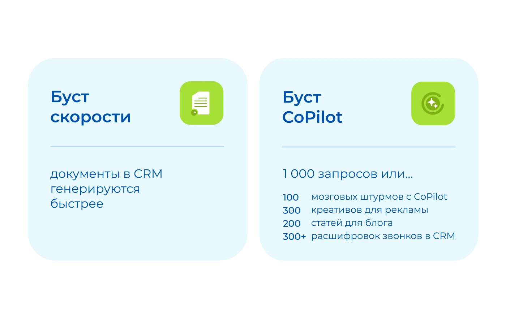
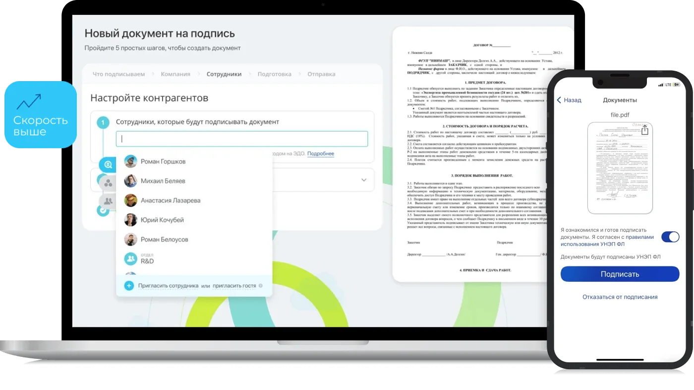
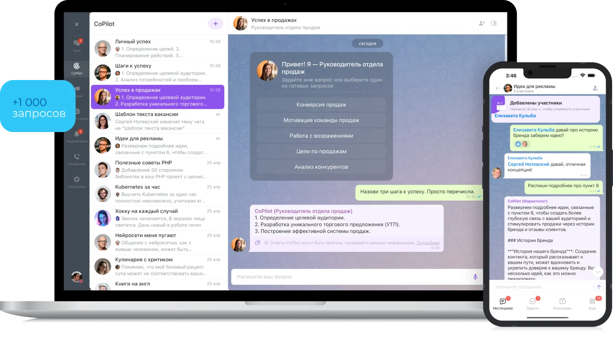
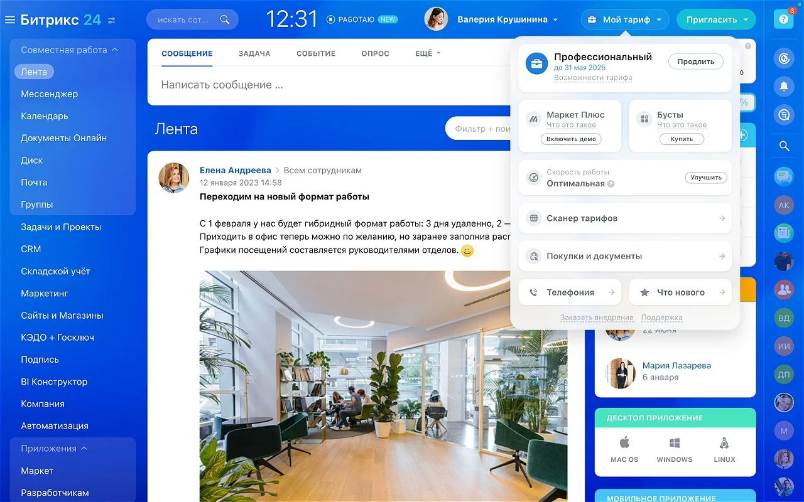

Бусты Битрикс24
Дополнительные возможности Битрикс24 без смены тарифного плана — ускорьте генерацию документов в CRM или увеличьте лимит запросов к BitrixGPT (CoPilot). Оформляем и сопровождаем через нас, без переплат.
Ваш Битрикс24 может больше
Бусты — это дополнительные возможности Битрикс24, которые подключаются без смены тарифного плана. Не нужно переходить на более дорогой тариф целиком — можно докупить именно то, чего не хватает: скорость работы с документами или лимит запросов к AI.

Документы в CRM генерируются быстрее
Ускоряет создание актов, договоров и других документов в CRM — запросы пользователей с бустом обрабатываются приоритетно, на отдельных серверах.
 Один буст действует один месяц
Один буст действует один месяц- Пять бустов — пять месяцев ускоренной работы
- До 12 бустов скорости в одном заказе

Больше запросов к AI-ассистенту
Один буст — это 1 000 дополнительных запросов к BitrixGPT (в интерфейсе CoPilot) в месяц. Можно купить сразу на год со скидкой 20%, а несколько бустов суммируются и работают одновременно.
- 100 мозговых штурмов с CoPilot
- 300 креативов для рекламы
- 200 статей для блога
- 300+ расшифровок звонков в CRM

Через ваш Битрикс24 — без лишних шагов
Бусты подключаются прямо в портале, через виджет «Мой тариф → Бусты». Доступны только на платных тарифах — покупайте столько бустов, сколько нужно именно вам. Мы поможем выбрать нужный вид и количество, если сомневаетесь.

Частые вопросы о бустах
Можно купить сразу несколько бустов?
В один заказ можно добавить до 12 бустов скорости или любое количество бустов BitrixGPT. Если нужны разные виды бустов, оформите отдельный заказ на каждый вид.
Если купить несколько бустов, как они будут работать?
Бусты скорости работают по очереди: пять бустов — пять месяцев ускоренной работы с документами в CRM. Бусты BitrixGPT суммируются и работают одновременно — например, три месячных буста дадут 3000 запросов в месяц.
Где посмотреть, сколько запросов к BitrixGPT осталось?
В виджете «Мой тариф → Бусты»: там видно количество купленных бустов, а по клику на отметку — сколько запросов осталось.
Как купить бусты на бесплатном тарифе?
Бусты доступны только на платных тарифах. Сначала нужно оплатить тариф, затем можно купить бусты.
Кто может купить бусты?
По умолчанию — любой сотрудник на портале. Чтобы это мог делать только администратор, отключите опцию «Разрешить всем оплачивать тариф» в настройках Битрикс24.
Что произойдёт с бустом, если не продлить тариф?
При переходе на бесплатный тариф бусты остаются, но использовать их нельзя. После возобновления платного тарифа оставшиеся бусты снова доступны, если их срок не истёк. При смене одного платного тарифа на другой бусты продолжают работать.
Где найти закрывающие документы после покупки бустов?
В разделе «Мой тариф → История заказов → Подробности заказов».
Что будет с бесплатными запросами к BitrixGPT, если купить буст?
Пока действуют бусты, бесплатные запросы не начисляются. Когда бусты закончатся и не будут продлены, с 1 числа следующего месяца вернётся бесплатный лимит вашего тарифа.
Переносятся ли неиспользованные запросы к BitrixGPT на следующий месяц?
Нет, неиспользованные запросы сгорают в конце месяца и не переносятся.
Куда обращаться, если возникли сложности при покупке бустов?
Напишите нам — мы сопровождаем ваш Битрикс24 на постоянной основе и поможем разобраться с бустами, а не просто продать лицензию.
Не уверены, какой буст нужен?
Расскажите, чего не хватает в текущем тарифе — подскажем, какой буст решит задачу, и поможем его подключить.